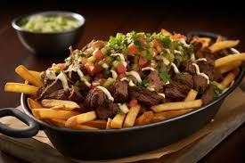

Description
Crispy french fries, thin and tender steak strips with layers of shredded cheese, yes please! Sour cream and guac, topped with chives, a night that we all need!
The things you'll need
- 2 teaspoons soy sauce
- 1 teaspoon salt
- 1 teaspoon ground black pepper
- 1 teaspoon garlic powder
- 1 teaspoon ground cumin
- 1 teaspoon chili powder
- 1 teaspoon Cajun seasoning
- 1 teaspoon lime juice
- 1 pound beef flank steak, cut into thin strips
- 2 cups oil for frying, or as needed
- 1 (16 ounce) package frozen French fries
- 2 ripe avocados, peeled and pitted
- 1 tablespoon guacamole seasoning mix
- ½ (8 ounce) package shredded Mexican cheese blend, or to taste
- ¼ cup chives, or to taste
- ¼ cup sour cream, or to taste
Directions to Heaven
Step 1
Combine soy sauce, salt, pepper, garlic powder, cumin, chili powder, Cajun seasoning, and lime juice in a glass or ceramic bowl; add steak. Cover and let marinate in the refrigerator for 1 hour, up to overnight.
Step 2
Preheat an outdoor grill for medium-high heat and lightly oil the grate. Heat oil in a deep-fryer or large saucepan to 350 degrees F (175 degrees C).
Step 3
Cook steak on the preheated grill until firm and cooked through, 3 to 5 minutes per side.
Step 4
Deep-fry the French fries in the hot oil until golden brown and crisp, 3 to 5 minutes, working in batches and adding more oil as needed. Transfer to a plate lined with paper towels to drain excess oil.
Step 5
Mash avocados with guacamole seasoning in a bowl. Set aside
Step 6
Place the fries on a microwave-safe plate and layer with cooked carne asada and Mexican cheese. Heat in the microwave for 20 seconds. Add guacamole, sour cream, and finish it with chives.
